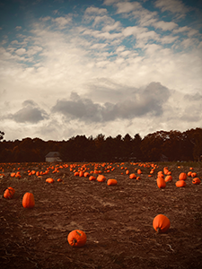

A sneak peek of what you will experience...and some guidance.
(Spoilers ahead! This is more a proof of concept than an actual teaser page)
Chapter I. Pumpkin in the House (Introduction)
Enter Pumpkin, a friendly gerbil who lives alone in a cage in a house with two humans.
In chapter I, you will learn how to interact with the environment, as well as some basic
traits of Pumpkin and his abilities.
Pumpkin is up late into the night as a storm is brewing outside. As he is rearranging his wood chips,
he notices a large shadow looming nearby at the outside window...
Curious, he hurries to the edge as the shadow of a large bird disappears into the night.
Though he is frightened, this makes Pumpkin curious about the world outside of his cage and outside
of his human's home...
To satisfy Pumpkin's curiosities, the player is tasked with the first puzzle: escape the cage.
You are introduced to the concept of equipping a “costume” (in this case, squirrel) to help Pumpkin
feel as though he blends in/to help build his confidence (he has this due to his humans giving it to
him in preparation of Halloween).
Costumes are a core element throughout Pumpkin in the Forest. You will learn to utilize items and make
their way around the cage. You must push the food bowl over to the door and sacrifice a beloved sun
seed to finagle your way out of the cage.
You can do these steps before sleeping to wait until the rain stops. though if you do, you will later realize you need
to wait the night out anyway. If the door is left open, Pumpkin will wake up to find that the cage has been locked again
and the puzzle will start over.
Since it cannot be raining for Pumpkin to escape the house, you must sleep before escaping. Once this has happened,
you can then proceed to escape from the cage.
Once out of the cage and it is not raining, you will have to find your way out.
Once this is accomplished, Pumpkin comes to realize the window is a further drop than he was expecting,
but by then it is too late and you have fallen into the brush.
Upon coming to, Pumpkin realizes he has accomplished his goal and now wants to explore before returning
to his cage (which he hasn't thought through yet).
End of Chapter I.
Chapter II. Pumpkin in the Forest
With full control of Pumpkin, it is your job to navigate through the forest.
Some areas are blocked off, you can choose a path, though you will ultimately end up
at the Talkabout Tree regardless (there are more path breaks in the future that don't lead to the same places)
along the way, you will be introduced to collectibles, including ammo (acorns, as we learn later),
unique leaves, and sun seeds (as a sort of currency).
Once you enter the proximity of the Talkabout Tree, you enter a cut scene/dialogue with Lesley, one of
the main squirrels. Lesley initially mistakes Pumpkin for a baby squirrel.
From this, we learn that Lesley is an aloof character, all while being well-meaning. She befriends Pumpkin
very early on.
Pumpkin explains to Lesley that he is lost in the forest and that his current main goal is to learn about
the shadow that had been stalking him the previous night...
Lesley warns Pumpkin against accomplishing his goal, though he insists. She doesn't know what the shadow was,
but has a feeling it was a nasty spirit.
Lesley leaves to get Bradley, the lead squirrel.
Bradley immediately is confused because Pumpkin is very obviously not a squirrel, though he likes Lesley,
so he tries his best to play along.
Bradley also discourages Pumpkin from furthering his investigations and introduces him to the inner
workings of the Talkabout Tree, where the player can explore various squirrel homes and a shop that
sells some items that will be important as the game progresses.
Bradley informs Lesley that Pumpkin is not a squirrel as a major reason Pumpkin wouldn't fare well in
their forest.
Against the squirrels' best wishes, Pumpkin says he will explore the forest anyway.
Bradley and Lesley wish him the best.
As a parting gift, Lesley teaches Pumpkin some important abilities for a squirrel to know.
after some tutorial, the player learns the following skills/abilities:
tree climbing (perfect for hiding, spending the night)
acorn retrieval (perfect ammo)
acorn disposal (a way for Pumpkin to protect himself using the found acorns as ammo)
Pumpkin makes his way deeper into the forest.
encounter some puzzles and quests along the way from squirrels.
End of Chapter II.
Chapter III. Branches of the Forest
You now have access to:
• The Creek
• The Abandoned Barn
• Pumpkin Prairie Fields
Depending on your choice, you will meet different animals and go through different quests and main story missions.
Finishing quests will give you bonus advantages for current playing as well as for later story elements.
Finishing main story missions is essential for the progression of the story. Each branch has at least one
main story mission, meaning although the order does not matter, it is important that you eventually finish
all of them before gaining access to The Depths of Turnabout.
There are some advantages to completing certain areas first, though you can always go back after
acquiring the necessary ability to get any collectibles in that area.
For example, if a collectible is in water and in the Pumpkin Prairie Fields, you will have needed
to have gotten the swimming skill from Phyllis in The Creek before being able to get said collectible.
Option A. Somewhere with an Ebb and Flow: The Creek
On the creek route, the player is trying to find any possible leads on the stalker
new critter/costume/ability: Phyllis the turtle and her respective elements.

Option B. On the Farm: The Abandoned Barn
On the abandoned barn route, the player falls into a hole while exploring (cut scene). Here, they meet Rapture and his family
Raccoon hole home.
new critter/costume/ability: Rapture the raccoon/stealth/grab
Halloway Peaks
Rapture takes Pumpkin to the nearby neighborhood to help him find resources and possibly his home
Pumpkin is not ready to return home, however, and asks that they head back to the raccoon home. There,
Rapture equips Pumpkin with the raccoon costume to help prepare him for his forest journeys.
After Pumpkin returns, Rapture tells him how to get to the abandoned barn, where Clarity - a “good, wise guy”
archetype will give Pumpkin advice and warns of Enigma and assigns quests.
The outskirts of the barn and the inside is guarded by rats. The player can choose to avoid the rats or they
can choose to defeat them.
Avoiding them results in obtaining the rat costume.
Defeating them has no penalty other than the absence of the rat costume.
bad guy(s): rats
squirrel costume is best against
Upon reaching the inside of the barn where the lead rat is, you will be judged depending on your approach—avoid
vs defeat. There is no penalty for defeating, though having avoided the rats will reward the player
with the optional rat costume.
Option C. Into the Fields: Pumpkin Prairie Fields
On the pumpkin prairie fields route, the player is tasked with the main mission of meeting the pumpkin mice
who may be able to give Pumpkin some advice about his stalker.
they ultimately let Pumpkin in on the fact that the stalker is likely a raptor, something that they and
many of the forest critters fear
new critter/costume/ability: pumpkin mice/pumpkin/hiding
bad guy(s): crows
squirrel costume ammo is best, though once you have the pumpkin costume, you can avoid conflict altogether.
Regardless of which branch you choose, you will encounter Toodles, the hamster.
End of Chapter III.
Chapter IV. Roots of the Forest
This chapter is where Pumpkin is introduced to Earl, a bat. Earl warns Pumpkin of Enigma and
introduces him to Toodles. Toodles and Pumpkin having already met, leads to an altercation where
Toodles lets Enigma know that Pumpkin is in their home.
Before meeting Earl, you are tasked with trekking further into the forest, completing a maze
and some other puzzles along the way. You are also given the opportunity to finish some more quests
for currency which will let you buy more things from an upcoming market (in chap V) which will prepare
you for when you must face Enigma.
End of Chapter IV.
Chapter V. Depths of the Forest
Chapter V begins as Pumpkin enters the Depths of Turnabout Forest, Enigma's lair and home of many bats.
Most of which don't share Earl's kind heart.
Among the depths, you pass through a little mole city where there is a shop and things for you
to prepare for your showdown with Enigma (which is foreshadowed as you get closer to the lair)
This chapter ends once Pumpkin defeats Enigma using all the costumes and collected items
End of Chapter V.
Chapter VI. Return to Halloway Peaks
After defeating Enigma, the player is tasked with finding their way home, where the main
portion of the main game ends (at least for part 1).
This leads to a mini quest back to Halloway Peaks, walking along the main road and avoiding getting caught.
This will take place in a maze.
This is the end of Chapter VI and the beginning of the Post-game content.
Chapter VII. Post-game
This chapter is the post-game chapter. It allows the player to complete unfinished quests and
collect any remaining collectibles.
At this point, you can go back through major areas, befriending what were previously
enemies, gaining even more abilities for even more puzzles.
You can now visit and befriend:
• the crows
• Enigma
• the fox
• the rats
• the other bats
Pumpkin's home acts as a hub from this point on, as opposed to the Talkabout Tree
The end... for now.